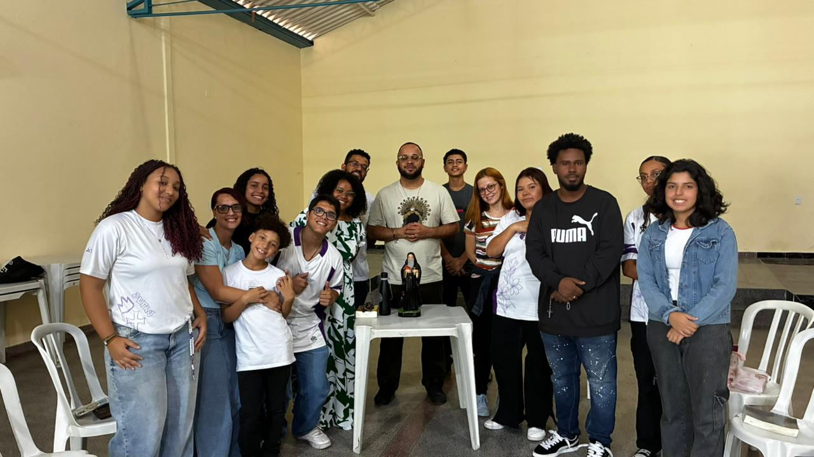
Relatos pessoais de exemplo, substituíveis. As imagens pessoais serão adicionadas pelo autor.

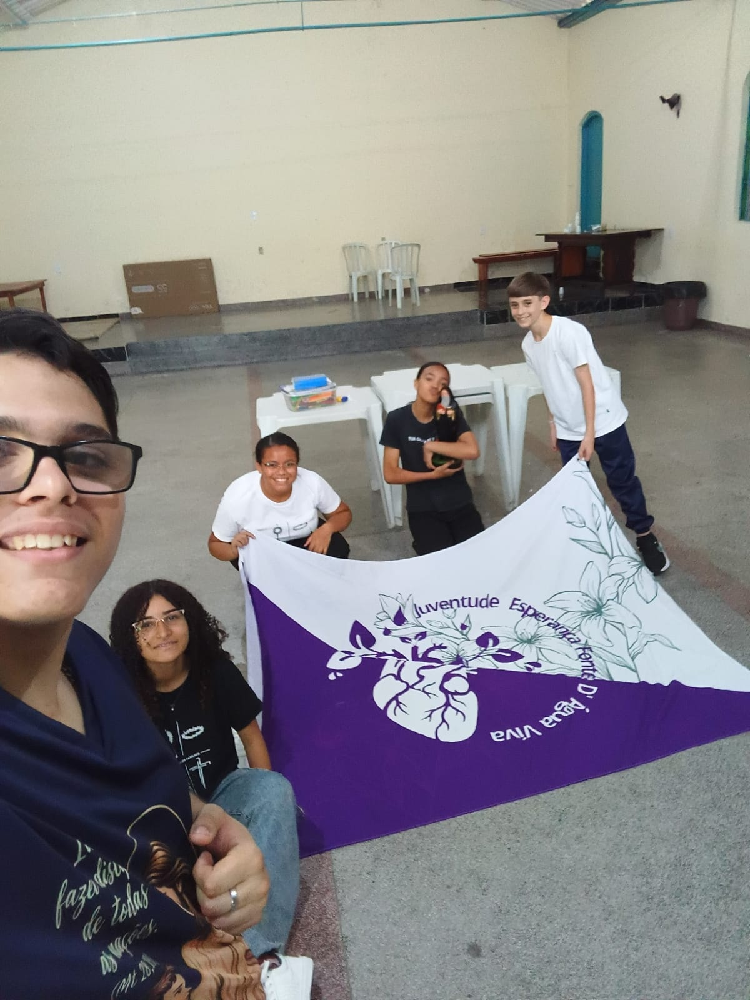
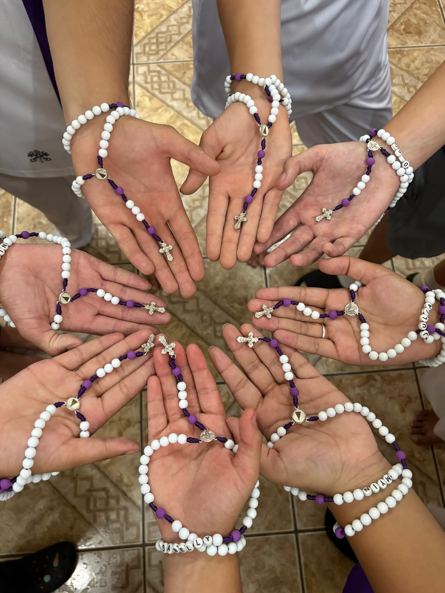
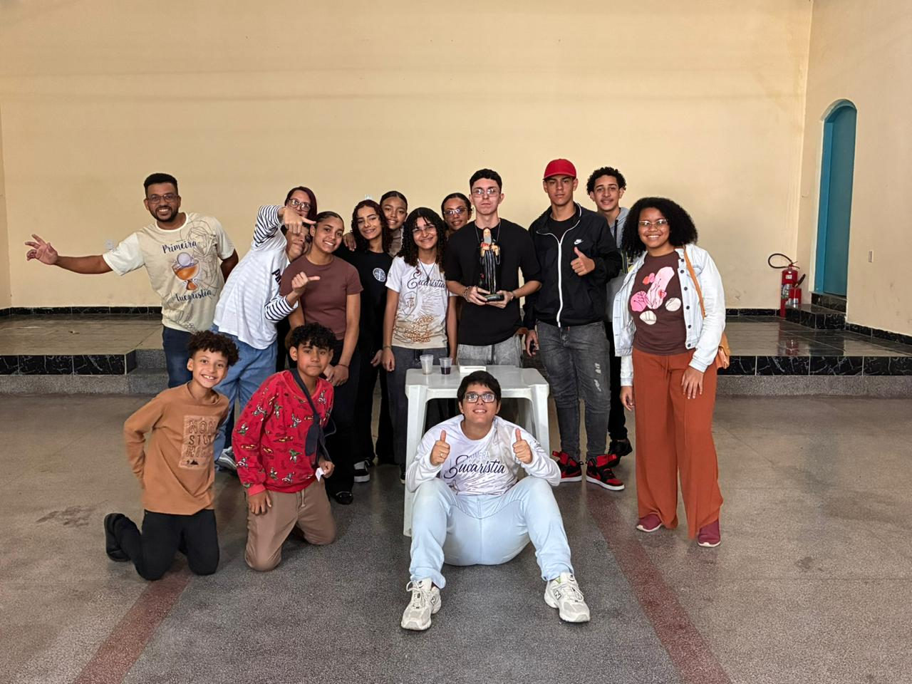
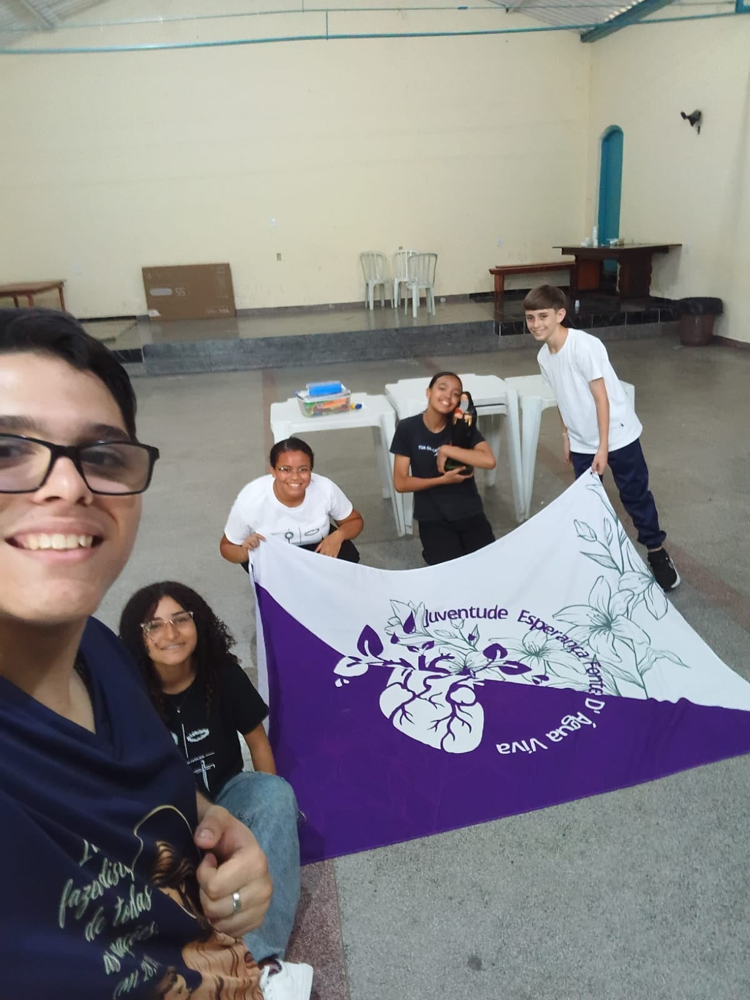
A serenidade de viver um dia de cada vez.
São Bento
São Bento, esteve presente durante minha conversão para o cristianismo,
meu primerio contado ele foi quando entrei no grupo de jovens da minha
comunidade, ele foi um dos primeiros santos que conheci a historia profundamente
e fiquei encantaddo com ela, seu lema 'ora et labora' influenciou muitas decições
minhas como a de ter virado catequista e futuramente coordenador do grupo de jovens.
Hoje em dia, ele ainda me ajuda bastante me motivando a ontinuar mesmo na dificuldade
e me fez pensar sobre mim mesmo e isto no momento em que eu estava com projeto em grupo,
projeto individual, catequese e a liderança do grupo me senti sobrecarregado e atolado de
tarefas mas minha fé em Deus e a interseção do santo me fizeram continar e não desistir de
nada.
ORAÇÃO FAVORITA · EXEMPLO
“A cruz sagrada seja a minha luz.”
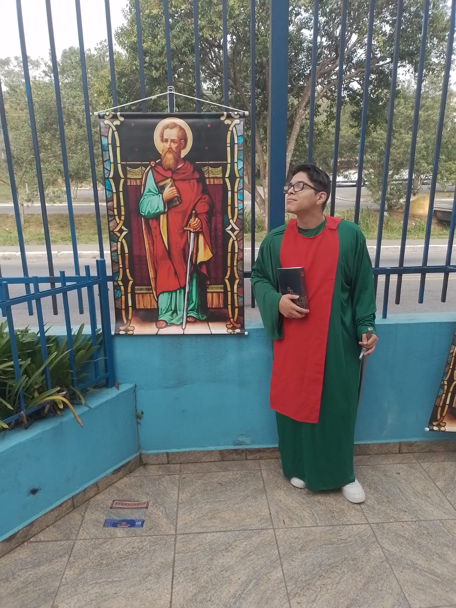
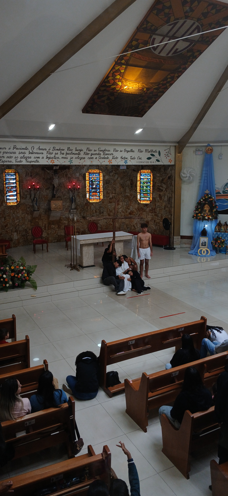
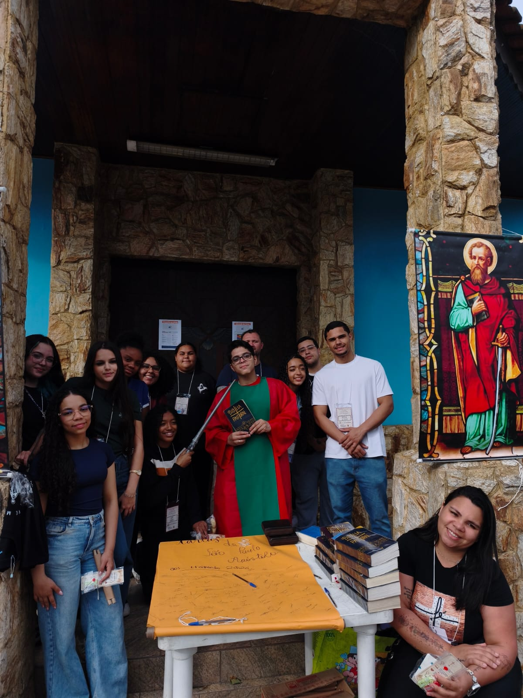
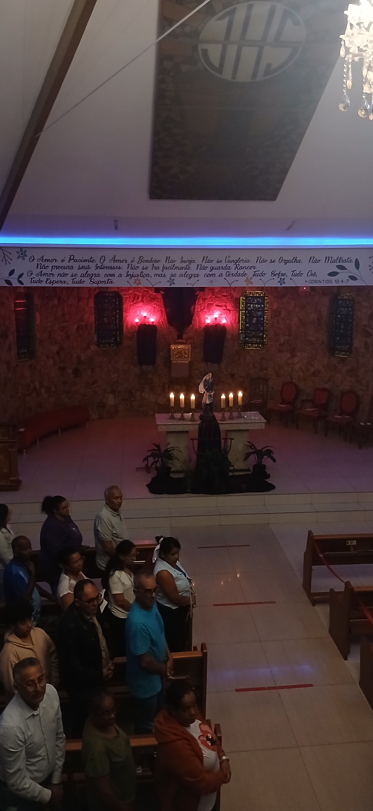
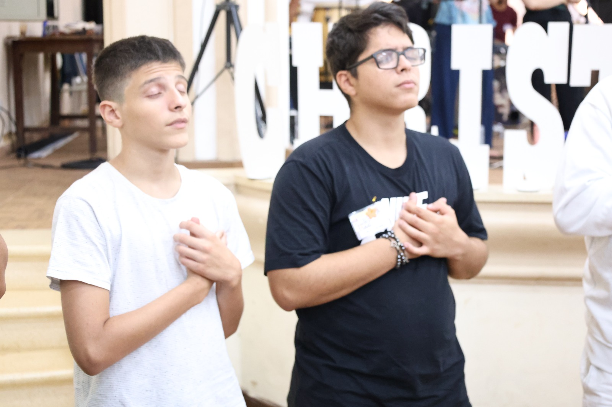
A coragem de acolher um novo caminho.
São Paulo Apostolo
São Paulo Apostolo eseve presente durante toda minha caminhada na igreja
por ele ser padroeiro da minha paroquia, fui conhecer melhor sua historia e
me deslumbrar com ela quando fui chamado para fazer um dia de gincanas e a minha
foi sobre ele e foi ai que pesquisei e conheci sua historia e hoje vejo que ela esta
muito presente no meu dia a dia, me ajudando muito.
Seu inicio de vida foi caçar cristãos e passou a evangelizar, uma mudança drastica e dificil
pois ele foi conciderado traidor e começou a ser caçado, minha rotina mudou muito desde que eu entrei na
faculdade tendo que me acostumar e me desenvovler rapidamente e ele foi um dos principais pilares nessa
caminhada.
ORAÇÃO FAVORITA · EXEMPLO
“São Paulo Apostolo, rogai por nós.”
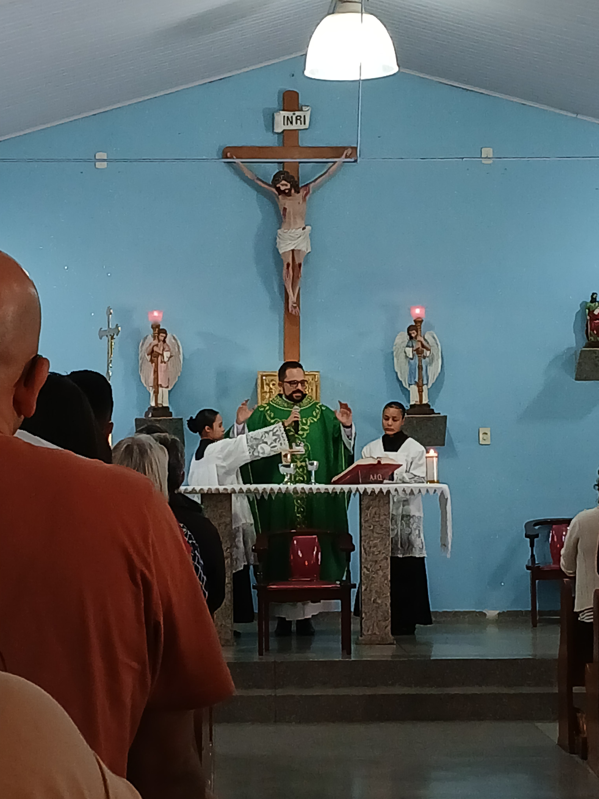
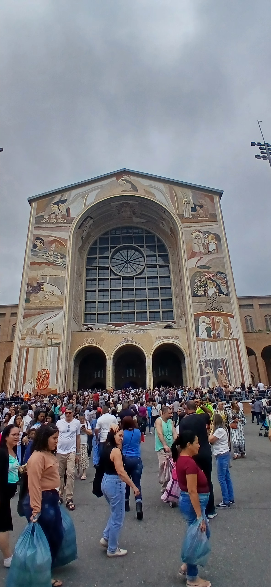
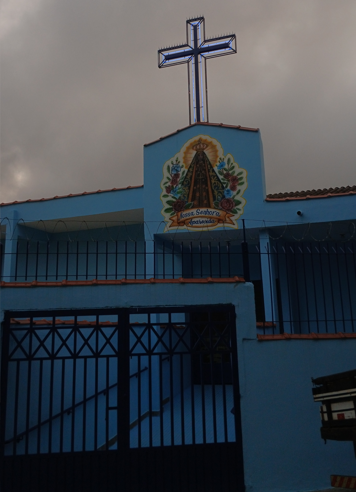
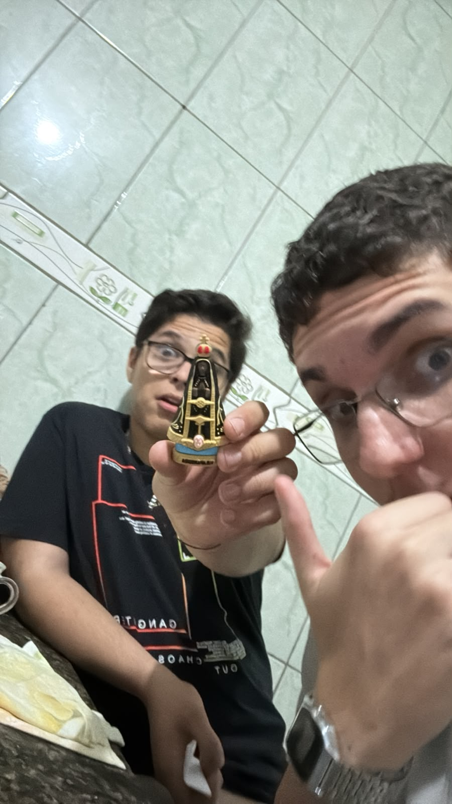
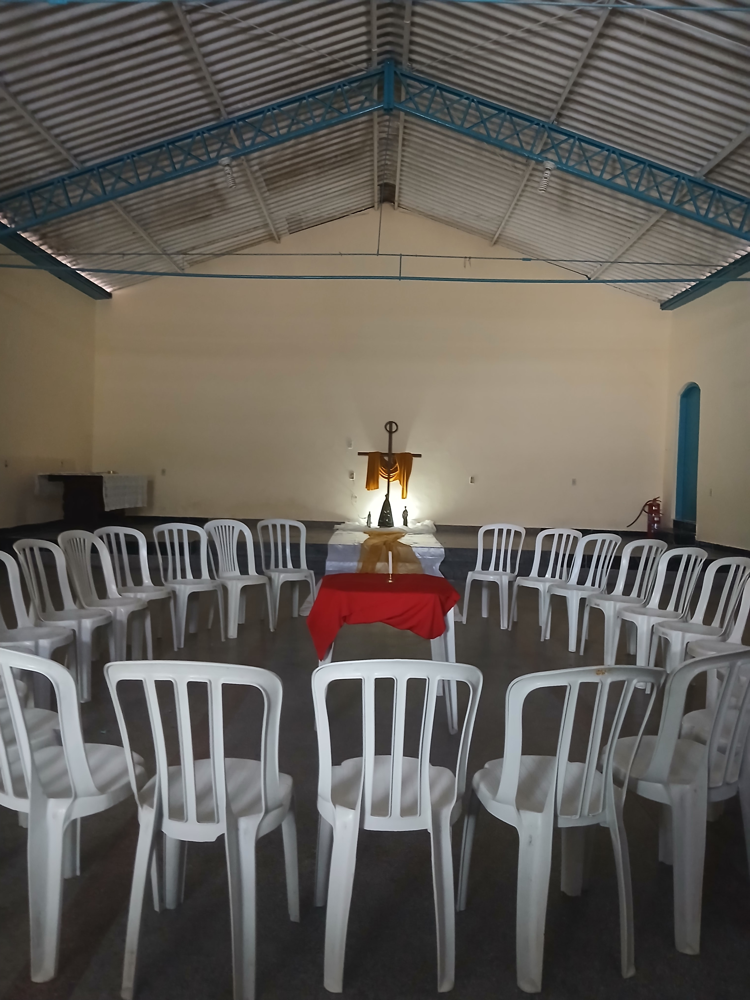
Um acolhimento que renova a esperança.
Nossa Senhora Aparecida
Nossa Senhora Aparecida sempre esteve presente na minha vida, desde quando eu era apenas um
pequeno bebê, minha mãe cantava a canção de aparecida como musica de ninar para eu dormir
e não sei como eu lembro disso mas acho incrivel e desde ai sempre tive um apego muito grande a
ela por diversos fatores. Sempre gostei de rezar o terço e quando mais novo participava do terço
da catequese e fui mais e mais me apaixonando por ela e tendo ela cada vez mais incluida na minha
vida.
Ela além de ser padroeira do Brasil é a padroeira da minha comunidade e todo ano fico admirado com
as festas da padroeira da minha igreja, que acontecem no dia de celebração dela (12 de outubro) e sempre
me convoco para ajudar e preparar momentos, danças, peças para celebrar o dia dela. Miha devoção a ela
vem mais por afeto, intimidade e sentimento pois aprendi a gostar dela e que posso contar com ela e o Poder
de Deus para me ajudarem.
ORAÇÃO FAVORITA · EXEMPLO
“Nossa Senhora Aparecida, rogai por nós.”